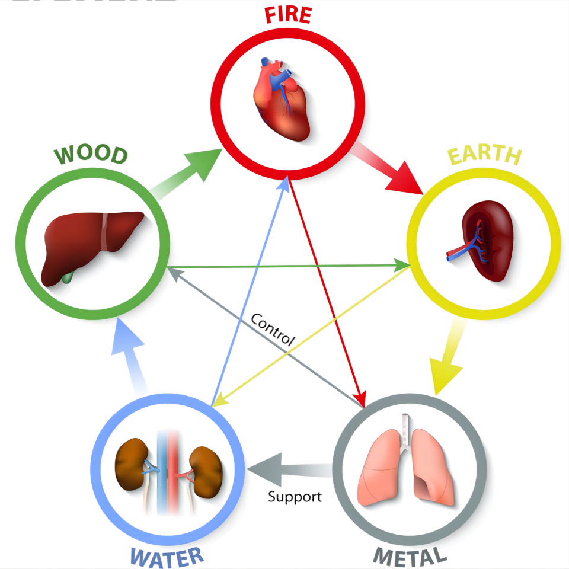
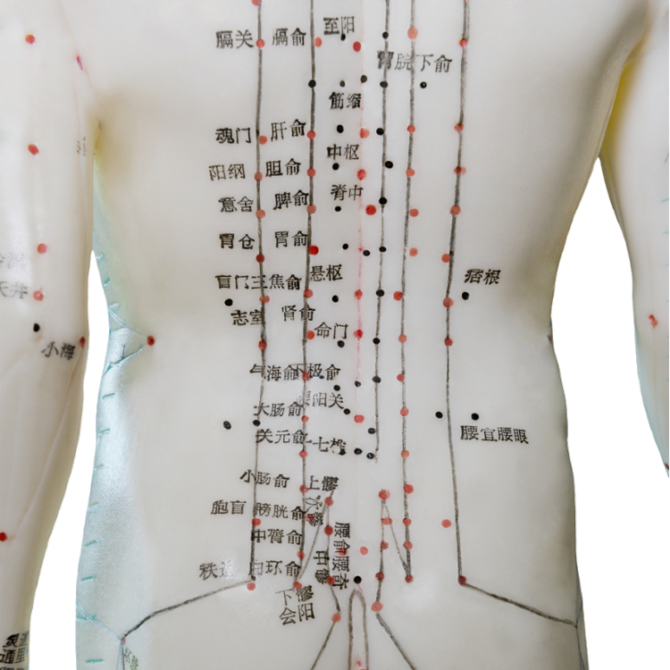
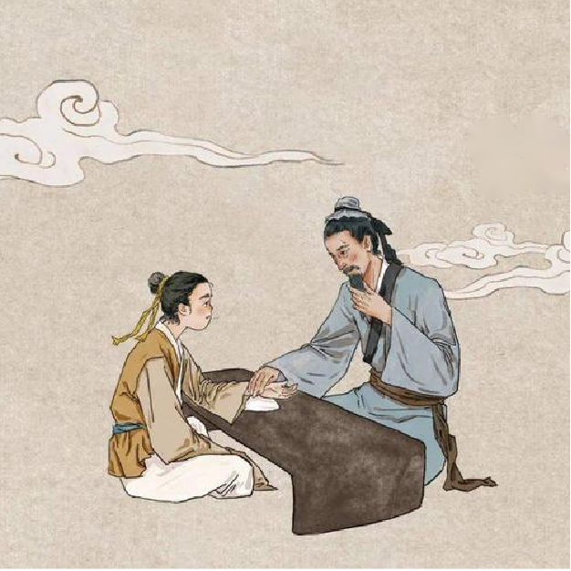
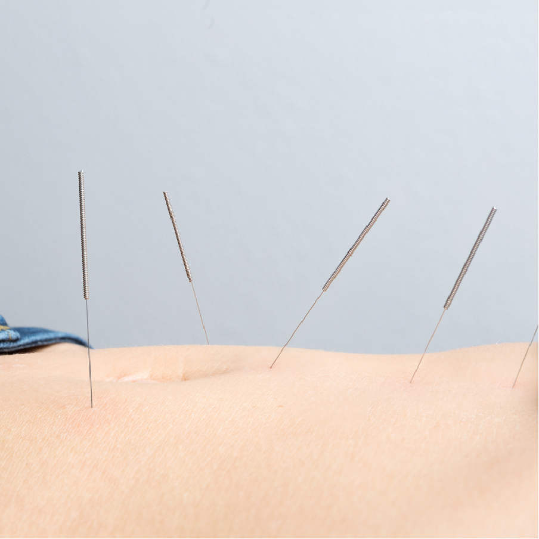
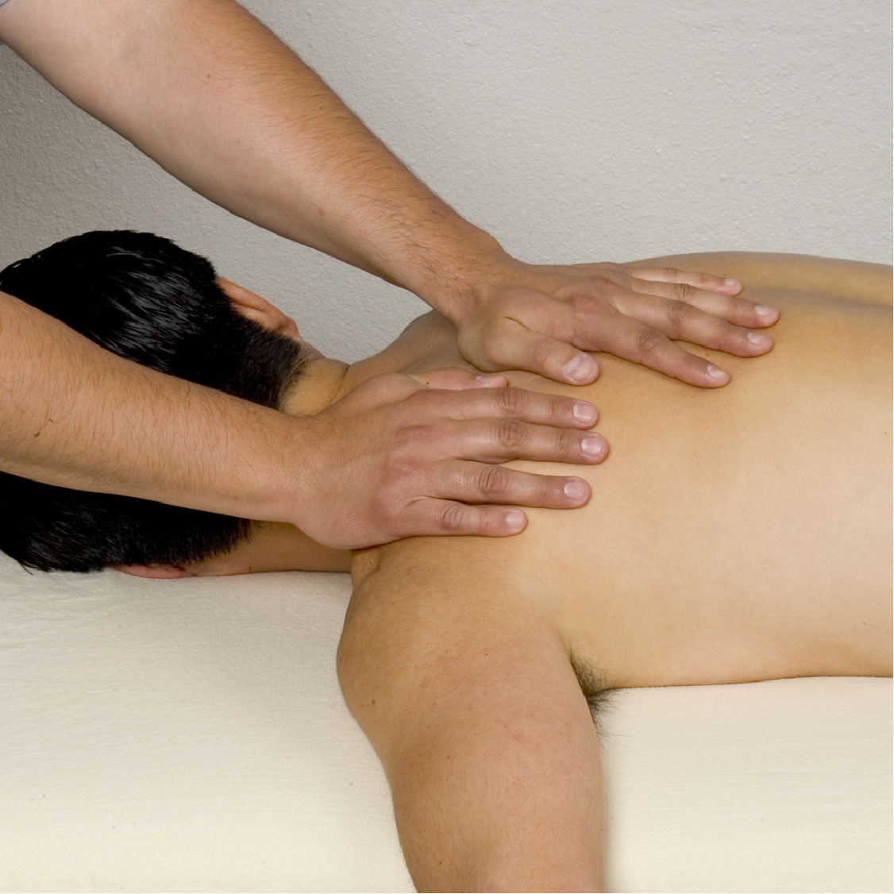
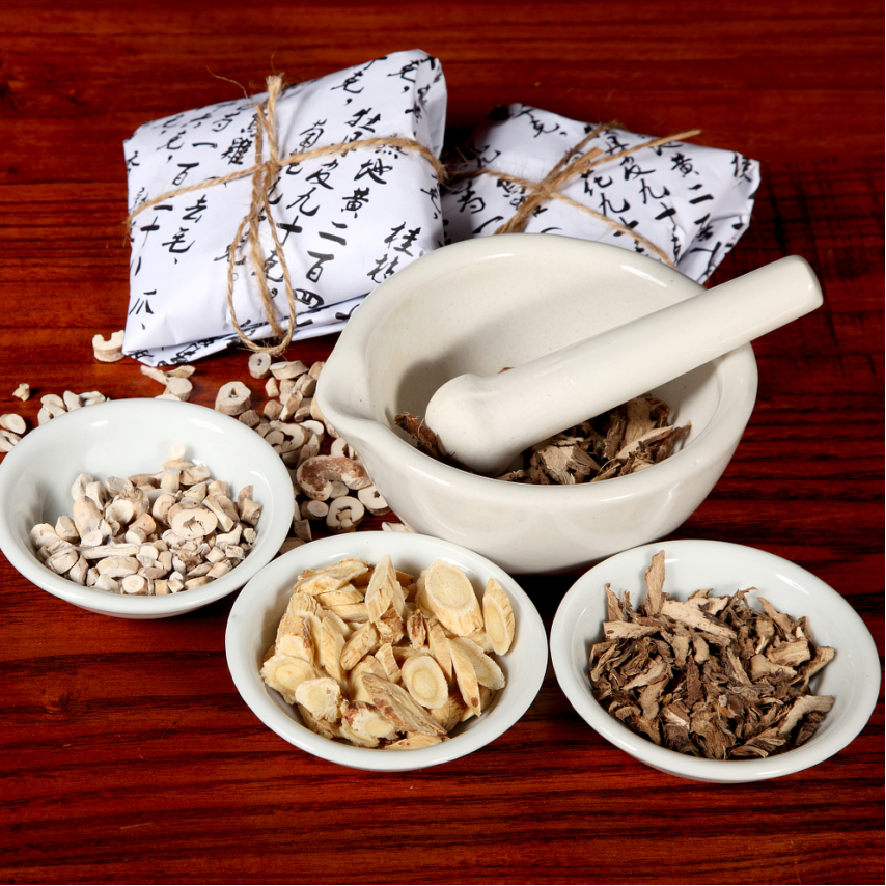
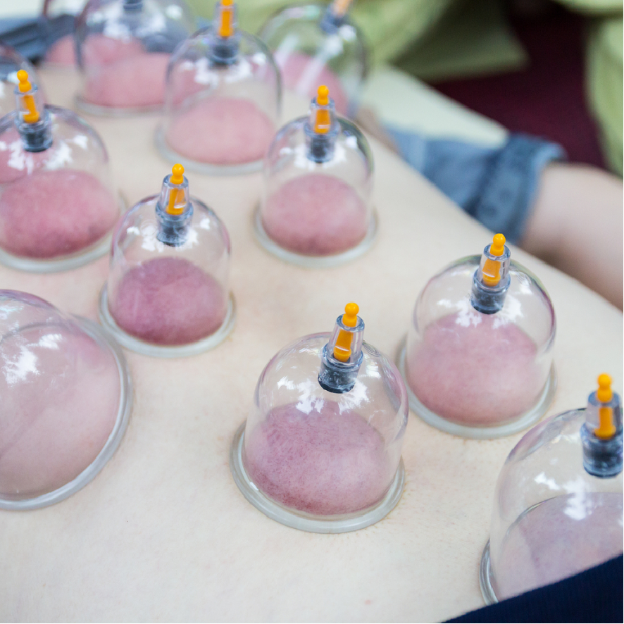

医路寻踪·中医理论
阴阳制化·气机运生：天人整体观下的辨证维生之道
-
 阴阳五行
阴阳代表对立统一，动态平衡；五行（木火土金水）对应五脏与自然元素，通过生克制化解释生理病理关联，如“肝属木，脾属土，木克土”揭示肝脾失调机制。
-
 脏腑经络
脏腑以五脏（藏精气）六腑（传化物）分工协作，经络为气血运行通道，内连脏腑外络肢节，构成人体功能网络，是针灸推拿的理论根基。
-
气血津液
气为动力，推动血与津液运行；血主濡养，津液润泽周身。三者互化互生，维持生命活动，失衡则见疲乏、燥渴或水肿等症。
-
 病因病机
外因（六淫侵袭）、内因（七情过极）及饮食劳倦为致病之源；病机核心是正邪交争与阴阳失调，如“正气不足”致外邪乘虚而入。
医路寻踪·经典技艺
顺五行疏经扶正，调阴阳通络祛疾

-
 针灸
以细针刺激穴位，调和气血，治疗疼痛、内科疾病及调节亚健康状态。
-
 推拿
手法按摩经络穴位，缓解肌肉劳损、关节疼痛，并辅助脏腑功能调理。
-
 中药
通过蒸、炒、炙等工艺处理药材，减毒增效，保留药性精华。
-
 拔罐
利用负压吸附体表，驱寒祛湿、活血化瘀，改善风湿痹痛与疲劳。
医路寻踪·新闻资讯
薪火相传，推陈出新
-
从“甲亢哥”直播看中医药文化“破圈”
2025.04.13
美国00后网红"甲亢哥"在成都接受中医把脉、针灸治疗的过程通过直播引发全球关注，海外网友直观感受脉诊、针灸的疗效。
-
宁阳县一院中医科主任讲中医养生
2025.04.13
宁阳县、长寿区等地医疗机构推出春季养生课程，重点传授应季饮食、穴位按摩、情志调摄等实用技法。
-
中医“未病” 的生物学基础与疾病易感状态
2025.04.13
暨南大学何蓉蓉团队在《Acta Pharmaceutica Sinica B》（IF=14.7）发表研究，首次用数学建模揭示疾病易感状态特征，为"治未病"提供生物学依据。
-
安溪县中医院荣获全国先进集体
2025.04.13
该院通过"中医联盟"实现县域内双向转诊1.7万人次，"共享药房"使基层中药处方执行率达85%，打造县级三甲中医院样板。
-
红塔区中医医院正式启用，完善人才机制
2025.04.13
玉溪市红塔区中医医院聘请4位省级名中医，通过"双主任制"实现学科建设与科室管理协同发展。
-
中医的困局：千年传承为何步履维艰？
2025.04.13
针对硫磺熏制枸杞、伪劣中成药等问题，监管部门将建立中药材追溯体系，严厉打击虚假宣传。
-
对话“80后老中医”林明欣”：中医与技术进步
2025.04.08
林明欣团队构建"命门知识图谱"，通过DeepSeek等AI模型实现智能组方与疗效预测，建立中医理论数字化研究范式。
-
中医干预儿童单纯性肥胖的研究进展公布
2025.04.02
上海龙华医院研究证实，中药内服联合小儿推拿可使儿童单纯性肥胖有效率超90%，并阐明茯苓、白术等药材调节肠道菌群的机制。